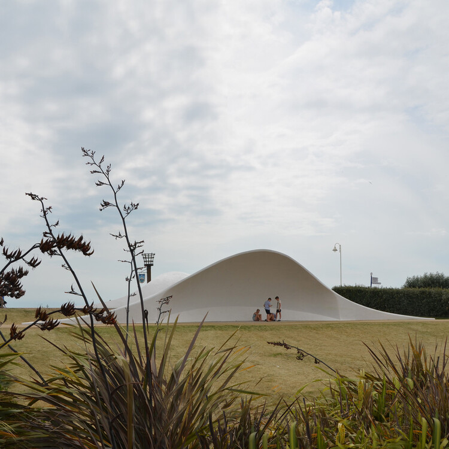

01 - Insira no seu site um favicon, para que a sua guia fique com um icone ao lado.
02 - Insira 05 Imagens com descrições no campo abaixo.
Pintura chinesa representando um pier, Chensen CH:

Esculturas Maias, México:
Pás de hélices eólicas utilizadas como sombreiros, Alemanha:
Ilhas Caribenhas, Havai:
Vila Norueguesa, Noruega: